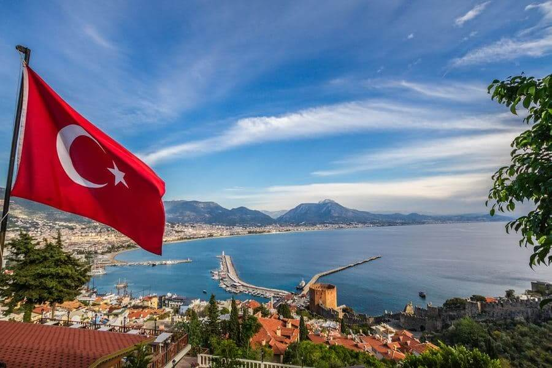
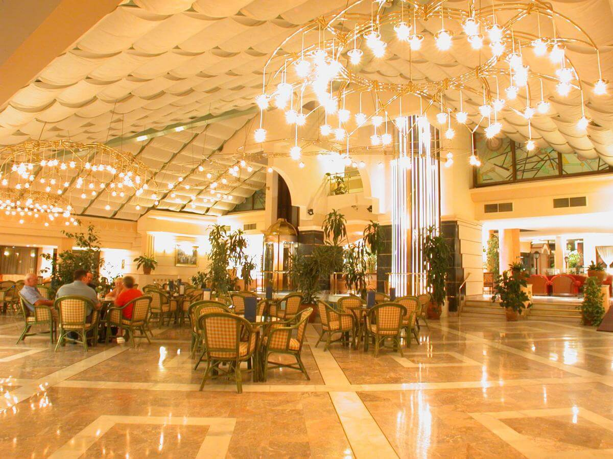
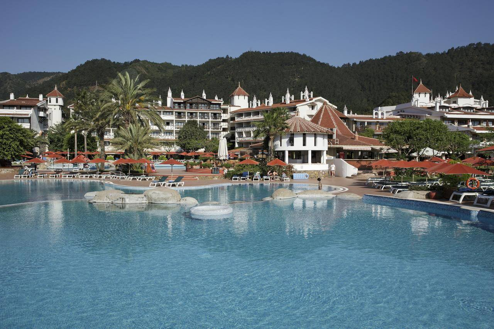
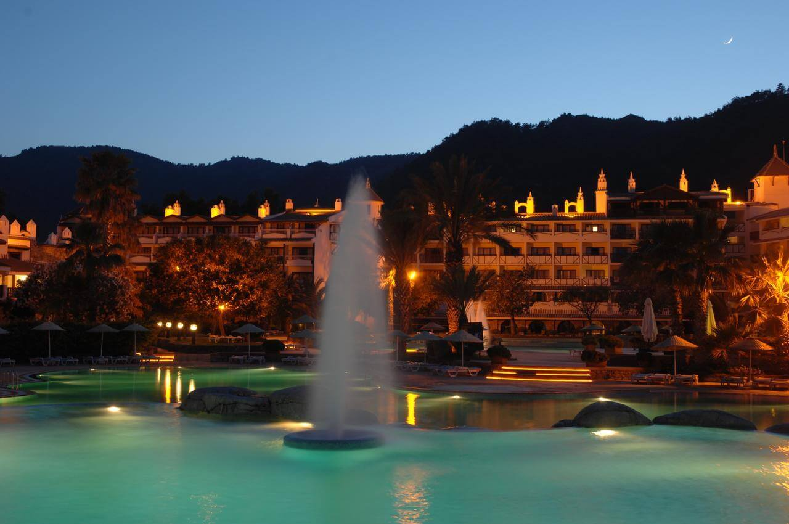
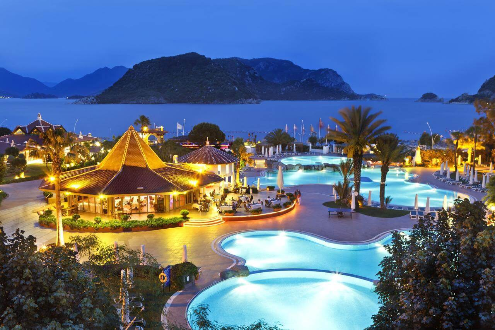
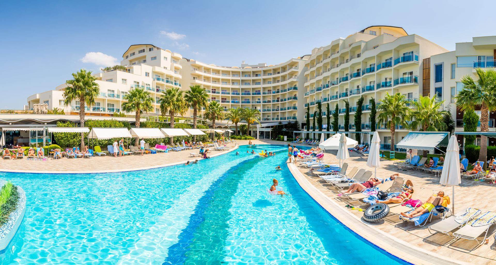
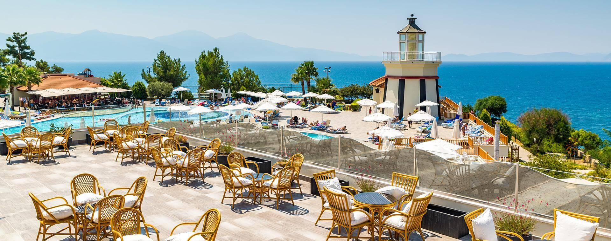
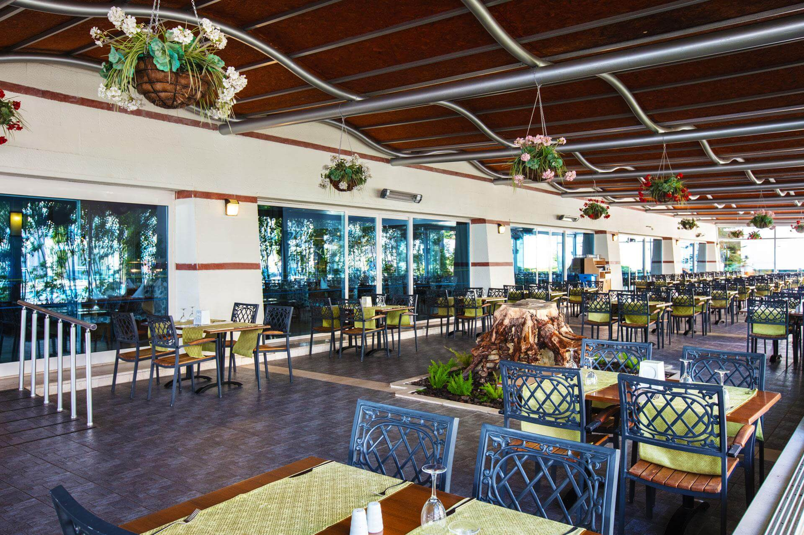

САМЫЕ КРАСИВЫЕ ОТЕЛИ ТУРЦИИ

Amara Dolce Vita Luxury
Отель Amara Dolce Vita Luxury расположен в уникальном, живописном уголке Турции, среди соснового леса, там где встречаются вечные горы Торос и изумрудные воды Средиземного моря.

Отель имеет свою бухту и песчано-галечный пляж протяжённостью 634 метра. Расстояние до центра Текирова 2 км, до центра города Антальи 58 км, до аэропорта Антальи 75 км, до Кемера 18 км.


Barut Hemera
Barut Hemera с концепцией Unlimited All находится в Сиде, на побережье Средиземного моря. К комплексу примыкает частный пляж.

На территории комплекса расположены бассейны, спа-центр и тренажерный зал. Любители активного отдыха могут сыграть в бильярд, большой и настольный теннис, мини-гольф, футбол, пляжный волейбол, дартс, бочче, а также заняться аквааэробикой, йогой, стрельбой из лука и оружия.


Aqua
Отель "Aqua" находится в курортной зоне города Мармарис, где встречаются Средиземное море с Эгейским морем. Пальмы, лазурная вода, чистый горный воздух дарят гостям незабываемый отдых.

Гостям предлагаются пляжные и водные виды спорта, турецкая сауна, оздоровительный массаж, открытый бассейн. Для детей оборудована площадка для игр и детский плавательный бассейн.


Marti Resort
Marti Resort – Marmaris, оформленный в загородном стиле, расположен в самом сердце Ичмелера (район Мармарис)

Отелю принадлежит частный пляж, удостоенный награды «Голубой Флаг».
На пляже есть волейбольная площадка, за дополнительную плату можно заняться дайвингом, виндсерфингом, парусным спортом, рафтингом и парасейлингом.


Otium Sealight Resort
Otium Sealight Resort построен среди пышного сада, на первой пляжной линии Эгейского моря, на курорте Кушадасы. Дорога от отеля до старинной части города с историческими музеями, памятниками и крепостью займет 10 минут езды на автомобиле.

Гости могут отдохнуть в паровой бане или сауне, заказать массаж (платно), поплавать в бассейне (есть крытый с подогревом и открытые), сыграть в баскетбол, волейбол, футбол, настольный и большой теннис, бильярд и дартс, позаниматься в фитнес-центре, повеселиться в аквапарке и заняться дайвингом (за дополнительную плату). Аниматоры проводят дневные мероприятия и тематические вечеринки. Для малышей есть клуб и игровая площадка.


ВВЕРХ